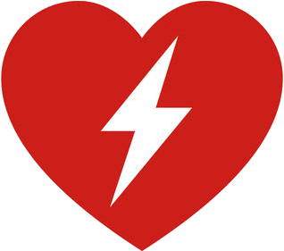

Hover the logo below, then read the results. They update live.
A — bare logo, no header around it (this one already worked)

Hover me no backdrop-filter parentThis red square runs the same animation with no hover involved. If it is still, animation is blocked. If it pulses, the animation itself is fine.